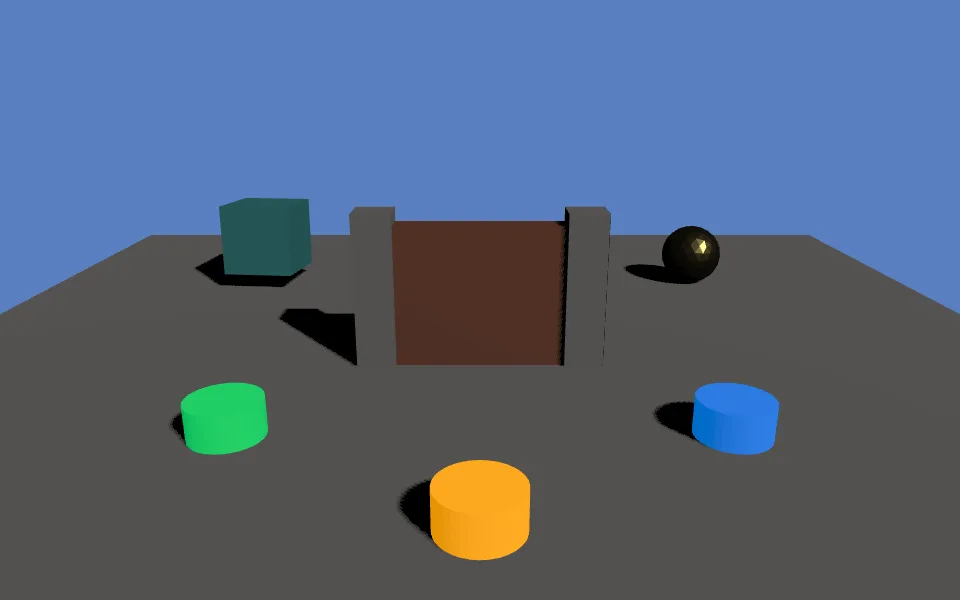
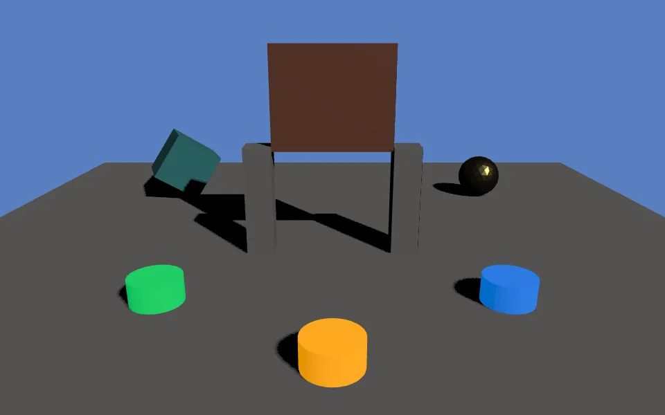
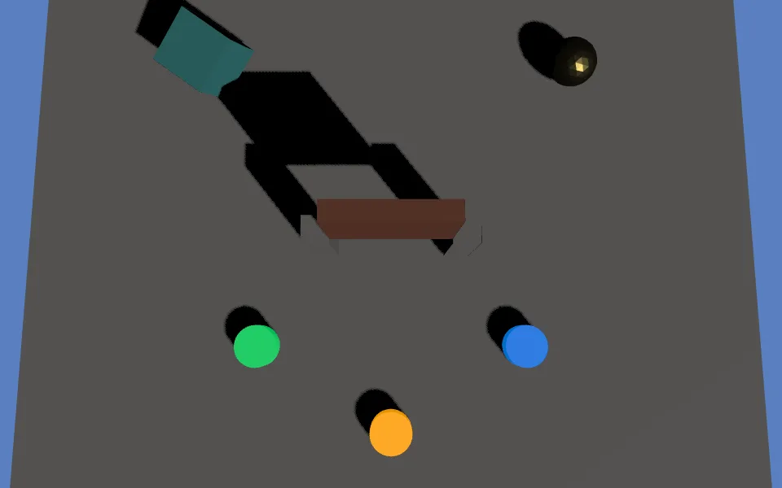
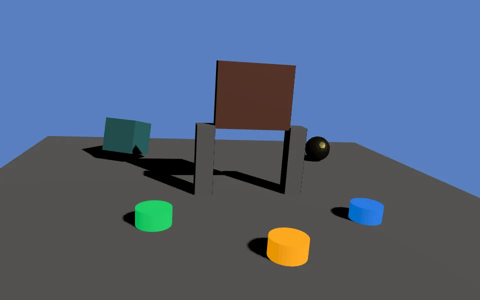
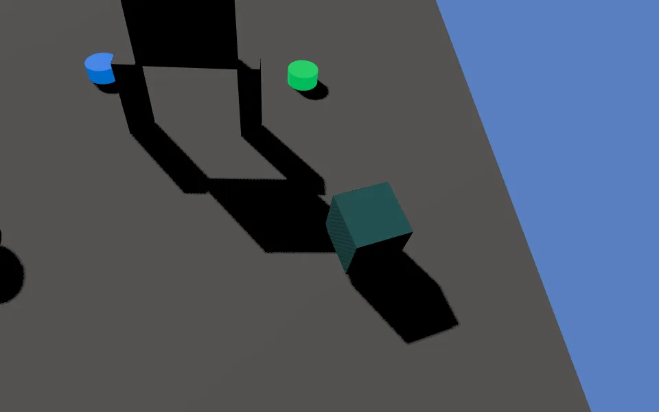
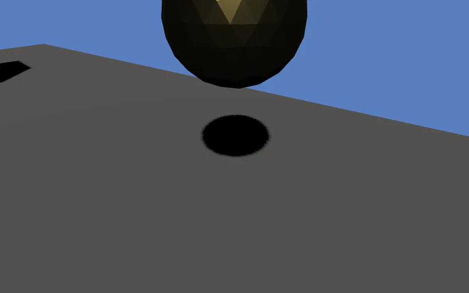

A Blender scene can't say "when clicked, play". X3D can, in plain nodes: a sensor, a timer, an interpolator, and ROUTEs between them. The X3D Blender I/O exporter now writes exactly that from custom properties on an object (or the new X3D Interaction panel), with no Script node. Below: one Blender file, one exported X3D file, driven by real mouse events in X_ITE.
Press load, then click the green button (the door slides up: a button playing another object's animation), the blue one (jump to the Overview camera; the teal cube keeps spinning because nothing triggers it, so it keeps the free-running scene timer), the orange one (fly a four-stop camera tour; it ends back on your view). Walk up to the gold beacon and it rises. X_ITE loads from vendor/x_ite (16.7.1, bundled).

X3D 4.0 · X_ITE 16.7.1Select an object, open Properties → Object → X3D Interaction, pick a preset. It only writes the properties below; a scene authored by hand with the same names exports the same file. Export with X3D Version → 4.0 and Animation on.
| Property | On | Values | What gets written |
|---|---|---|---|
x3d_trigger | object | click | proximity | TouchSensor or ProximitySensor inside the object's Transform (a click works on the object and its children) |
x3d_action | object | animate | viewpoint | tour | animate: touchTime/enterTime → a TimeSensor (loop false) that drives the target's interpolators. viewpoint: BooleanFilter so a press binds the camera and the release does not unbind it. tour: starts the tour timer |
x3d_target | object | object name | animate: whose animation plays (default: itself). viewpoint: which camera to bind |
x3d_radius | object | metres, default 3 | ProximitySensor box 2 × radius per side, in world units (the object's scale is divided back out) |
x3d_tour_order, x3d_tour_dwell | camera | int > 0; seconds, default 2 | the camera is a tour stop; stops are visited in order and rested at for the dwell |
x3d_tour_travel, _loop, _autostart | scene | seconds, default 3; bool; bool | flight time between stops; repeat; start at load (autostart implies loop) |
Source: source/interaction.py, source/interaction_ui.py in x3d-blender-io (this thread's branch); defaults are in the code, not assumed.
The same five-node pattern for every "animate" trigger, one extra rig for the tour. All of it is ordinary X3D 4.0, readable by any browser that implements the standard nodes.
An object some trigger targets stops being driven by the always-looping SceneTimer; untargeted objects (the teal cube) keep it.
Real mouse events (Playwright 1.63.0) on the exported file in X_ITE 16.7.1, Chromium 157.0.8103.78 headless with SwiftShader software GL. The states are read from the running scene through the SAI. SwiftShader draws about 0.6 s a frame, so only the order of events and node states are claims, never a frame rate. Raw: receipts/xite-16.7.1-receipt.json.
| Step | Active viewpoint | Running timers / sensors | Reads as |
|---|---|---|---|
| loaded | Start | SceneTimer | only the untriggered cube is moving; the door is closed |
| click green button | Start | SceneTimer, TT_Door | click → TouchSensor → TimeSensor started |
| 2.6 s later | Start | SceneTimer | the door's one cycle (47 frames at 24 fps = 1.958 s) finished |
| click blue button | Overview | SceneTimer | BooleanFilter → set_bind worked |
| click orange button | Tour → Start | SceneTimer, TourTimer for 13.7 s | four stops flown; the tour viewpoint unbinds itself at the end (13.5 s cycle) |
| bind the camera inside the beacon box | Tour stop 2 | SceneTimer, PS_Beacon, TT_Beacon | enterTime → startTime worked; beacon rises |





With the default startTime="0" and loop="false", X_ITE 16.7.1 sees a cycle that ended long ago and sends fraction_changed = 1 at load, parking every targeted object at the end of its animation (the door loaded open). Every triggered timer is now written with startTime="1e+30", which stays silent until a ROUTE sets it. Fixed in the exporter and pinned by a test.
The tour rig passes inside the beacon's box (stop 2 rests 1.5 s at the same pose as the camera that did trigger it), yet PS_Beacon stayed inactive in every poll (0.25 s apart) of a 16 s tour run; a minimal file (an interpolated Transform carrying a Viewpoint past a ProximitySensor) does fire in the same X_ITE. Cause unproven; one guess is the viewer pose after a bind transition. A viewer who walks into the box triggers it; the demo's receipt uses a bound camera to prove the sensor → timer ROUTE.
The beacon is scaled 0.6, so a size="7 7 7" sensor covered only 4.2 m. The exporter divides each axis by the object's scale so x3d_radius is in world metres (a parent's scale is not compensated; a rotated object turns its box).
The Transform's static value is Blender's object at the current frame, so a scene saved while the playhead sat on the last keyframe would also load "open". The demo builder calls frame_set(1) before exporting; authors must leave the playhead where they want the scene to start.
| Not run | Why it matters |
|---|---|
| Any browser other than X_ITE 16.7.1 (Castle, FreeWRL, X3DOM, Blender's own importer round trip of these ROUTEs) | The file is standard nodes and validates, but "it validates" is not "every browser plays it" |
| A hardware GPU, touch input, VR controllers | Software GL and a mouse only |
| The Blender 4.5 / 5.1 / 5.2 headless CI matrix | Tests ran on the bpy 5.2.4 wheel with Python 3.13; CI will run the rest once the PR is open |
| Interactions inside hierarchies with scaled parents, shape-key and HAnim animation as a trigger target | Only object-transform animation can be a target; a parent's scale is not compensated for the proximity box |
| Re-clicking while a cycle is running, or a re-trigger after it ends | By the TimeSensor rules a click while active is ignored and one after the end restarts from frame 1 (the door drops shut and rises again); not exercised in the browser |